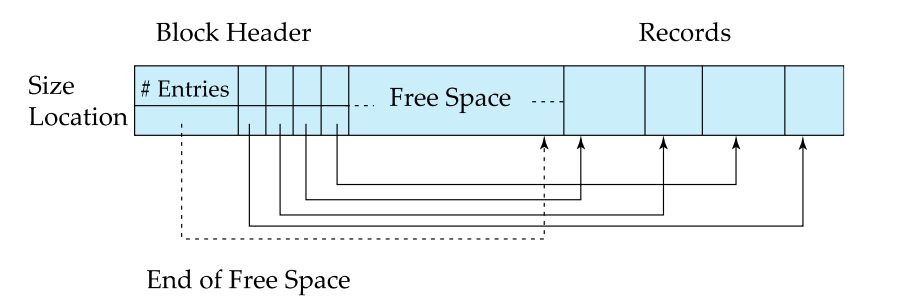
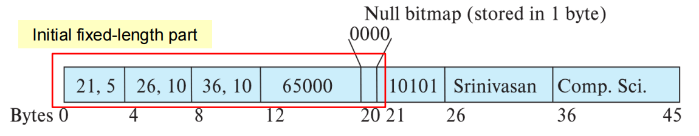
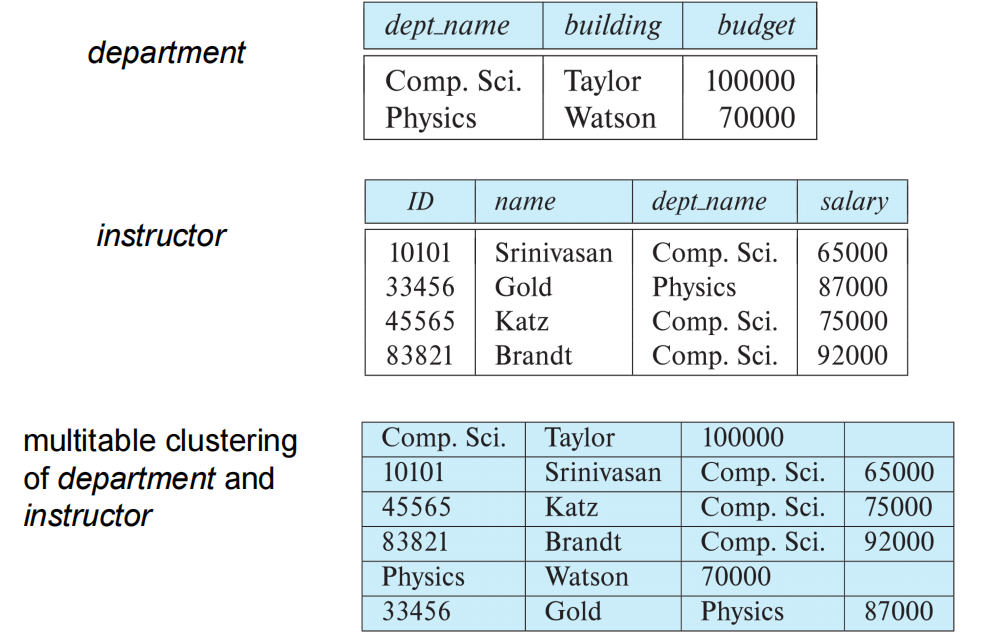
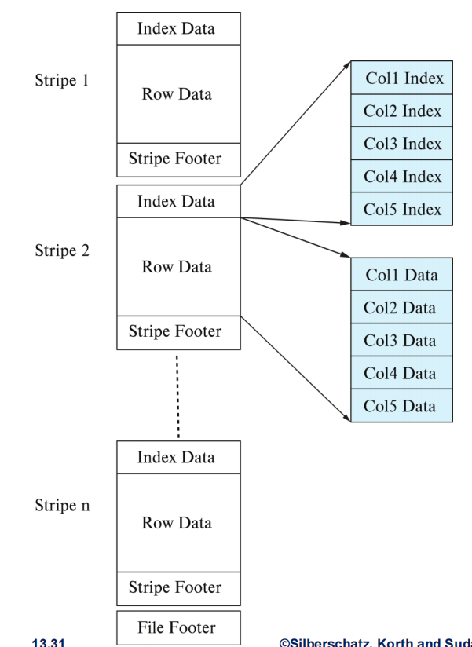

Lecture 9: Data Storage Structure
1. 数据存储结构
1.1 文件组织基础
文件结构层次：数据库 → 文件集合 → 记录序列 → 字段序列
这表示数据在物理存储中的组织方式：数据库包含多个文件（文件集合），每个文件由多个记录组成，而每个记录又由多个字段组成。这是典型的层次化数据组织方式，便于管理和访问。
固定长度记录：
-
存储位置计算：\( \text{ Record(i) } = n \cdot (i - 1) \)
i是记录的编号（从1开始）n是每条记录所占的空间（字节数）
举个栗子🌰：假设你有一个文件，里面有5条记录（record 1 到 record 5），每条记录占用10字节。
那么这也就是说：
n = 10（每条记录长10字节）i = 1, 2, 3, 4, 5（记录编号）
那么我们可以算出每条记录的起始位置：
记录编号 起始位置计算方式 起始位置 record 1 10 × (1 - 1) = 10 × 0 0 字节 record 2 10 × (2 - 1) = 10 × 1 10 字节 record 3 10 × (3 - 1) = 10 × 2 20 字节 record 4 10 × (4 - 1) = 10 × 3 30 字节 record 5 10 × (5 - 1) = 10 × 4 40 字节 因为每条记录长度是固定的（比如都是10字节），所以你可以通过简单的数学公式直接定位到任意一条记录的位置：比如你想访问第3条记录，你就知道它从第20字节开始读取，读到第29字节结束（共10字节）。
这就像你在图书馆里找书：如果每本书都一样厚，排成一排，那你可以直接根据它的序号快速找到它的位置。
-
删除处理策略：
当删除一条记录时，由于记录是固定长度、顺序存储的，不能简单留下空位，否则会影响后续查找效率。有三种常见策略：
策略 操作 优缺点 顺序前移 移动 i+1至末尾记录填补空缺保持连续但是操作代价高（大量数据移动） 末尾填补 用最后一条记录覆盖被删记录 速度快但是会破坏顺序 空闲链表（最佳方案） 维护空闲记录链表 高效利用空间但是需要额外空间 
graph LR Record0[Record0: 占用] --> Record1 Record1[Record1: 占用] --> Record3 Record3[Record3: 空闲] --> Record4 Record4[Record4: 占用] --> Record5 Record5[Record5: 空闲] Header[Header：空闲列表头指针] --> record3[Record3: 空闲] --> record5[Record5: 空闲] style Record3 stroke:#333,stroke-dasharray: 5 5 style Record5 stroke:#333,stroke-dasharray: 5 5 style record3 stroke:#333,stroke-dasharray: 5 5 style record5 stroke:#333,stroke-dasharray: 5 5
1.2 变长记录处理
定义：在实际数据库应用中，如果一直采用固定长度存储（如CHAR(100)），会浪费大量空间。有些字段的长度不是固定的，各种各样的情况导致了每条记录的实际长度不一样，即为变长记录（Variable-length Records）。
出现场景：
-
VARCHAR字段
- 如
name VARCHAR(100)，实际名字可能是 "Tom" 或 "Christopher Columbus"。 - 不固定长度，需要动态管理存储空间。
- 如
-
多类型记录混合存储
同一张物理文件中存储多种结构的数据（比如一个员工表里混着老师、助教、行政人员等不同类型）。这通常出现在一些老式或优化性能的设计中。
-
重复字段（旧数据模型）
- 在早期数据库设计中（如层次模型、网状模型），允许字段重复出现（如一个学生有多个电话号码）。
- 相对的，现代数据库已较少使用这种方式，而是通过关联表实现。
存储结构：

小朋友点名册
想象一下你是某混沌邪恶的老师，每次上课都要统计班上学生的出勤情况。你设计了一个简单的表格：
| 姓名 | 班级 | 缺勤原因（可空） |
|---|---|---|
| aa | bb | cc |
其中：
- 姓名：字符串（
VARCHAR） - 班级：字符串（
VARCHAR） - 缺勤原因：可为空（
NULL）
有一天你记录了这样一条信息：
你想把这条记录存到计算机里，而且想尽可能节省空间，同时还能快速查找字段内容。
那么计算机是怎么存这条记录的？
我们把上面这条记录转换成刚才提到的计算机底层存储的样子：
看不懂？不急，接着往下看。
步骤 1：判断哪些是变长字段
在我们的例子中：
姓名：变长（比如“文庭”和“文子衿”长度不同）。班级：变长（比如“二年级1班” vs “三年级12班”）。缺勤原因：可为 NULL，也是变长字符串。
所以它们都属于变长字段。
步骤 2：构造 Null 位图
总共3个字段，而第三个字段“缺勤原因”是 NULL，所以 Null 位图是：001；
有些系统会反过来，写成
100，具体取决于实现。
我们就假设这里使用的是 001 表示第三个字段为NULL。
步骤 3：计算偏移量
先写下所有的字段内容：
- 姓名：
文子衿→ 9个字节（这里假定用的是 UTF-8 标准，一个汉字3字节） - 班级：
二年级1班→ 13个字节 - 缺勤原因：
NULL→ 不需要存储
分解解释每一部分：
| 部分 | 内容 | 含义 |
|---|---|---|
| Null位图 | 001 |
第三个字段“缺勤原因”为NULL，而其它都非空 |
| 固定字段 | （没有） | 没有 INT、DATE 这类固定长度字段，略 |
| 偏移量1 | (10,9) |
第一个变长字段从第10字节开始，占9字节 |
| 偏移量2 | (19,13) |
第二个变长字段从第19字节开始，占13字节 |
| 变长数据区 | 文子衿, 二年级1班 |
实际的字符串内容 |
需要注意的是，这里假定Null位图占1字节，偏移量1和偏移量2将要各占4字节，因此
1.3 分槽页结构（Slotted Page）
定义：分槽页结构是一种将记录指针和记录内容分离的页面布局方式，它允许记录在页面内移动而不影响外部引用它们的指针。
块结构：
--------------------------------------------------------------------------------
| 记录数 | 空闲空间尾 | 记录1位置/大小 | ... | 记录N位置/大小 | 空闲空间 | 记录数据 |
--------------------------------------------------------------------------------
关键特性：
-
记录可在页内移动（保持紧凑）
如果某条记录被删除了，后面的数据可以向前移动填补空缺，同时只更新“槽表”中的位置信息即可，不需要修改其他地方的指针。
-
指针指向页头条目而非直接指向记录
外部引用（如索引）并不直接指向记录本身，而是指向“槽表”中的一个入口。即使记录内容在页面内移动了，只要更新槽表里的偏移量，所有引用依然有效。
-
空闲空间动态管理
页面中间可能有空洞（比如删除了某些记录），插入新记录时优先使用这些空洞，如果没有足够空间，则从页面两端向中间扩展。
学生档案
想象你有一个学生档案架（相当于数据库中的一个磁盘页），这个架子有以下特点：
- 它有编号为
0 ~ 99的位置（共100个字节）。 - 每个学生的档案必须整本放入档案架，不能断开存放。
- 你还有一个目录表（槽表），用来记录每本学生档案的位置和长度。
- 插入新档案时优先使用空闲空间，而不是盲目前移或后移。
而对于这个学生档案架：
-
初始状态：（空页面）
字节位置 内容 0 ~ 99 空闲空间 槽表（Slot Table）为空：
[ ] -
步骤一：插入第一条记录
我们假设这条记录大小是 20 字节，而其存放：
- 起始位置 80（从后往前放）
- 更新槽表：添加一条记录
(pos=80, len=20)
字节位置 内容 0 ~ 79 空闲空间 80 ~ 99 记录1 槽表：
[ (pos=80, len=20) ] -
步骤二：插入第二条记录
我们假定这条记录大小是 15 字节，对于其存放：
- 起始位置 65（继续从后往前放）
- 更新槽表：添加一条记录
(pos=65, len=15)
字节位置 内容 0 ~ 64 空闲空间 65 ~ 79 记录2 80 ~ 99 记录1 槽表：
[ (pos=80, len=20), (pos=65, len=15) ]注意：槽表是按插入顺序排列的，不是物理顺序。（也就是说，逻辑与物理分离）
-
步骤三：删除第一条记录
现在记录1被删除了：
- 删除后不立即移动其他记录
- 在槽表中将记录1标记为“无效”或删除
字节位置 内容 0 ~ 64 空闲空间 65 ~ 79 记录2 80 ~ 99 (已删除)空闲空间 槽表：
[ (pos=65, len=15) ]这时候页面中间出现了空洞（80~99 是空的，前面也有空闲空间）
-
步骤四：插入第三条记录（较大的记录）
假设这条记录大小是70字节。
- 当前空闲空间在前段（0~64）只有65字节可用
- 后面有个空洞（80~99）也只有20字节
不够单独放下70字节的记录，怎么办？这时候就进行一次紧凑整理：
- 把记录2移到后面去（起始位置70）
- 前面腾出连续空间（0~69）
- 插入新记录到0 ~ 69（70字节）
由于通常会从页面末尾向前紧挨着放置记录，所以记录2被移到了7084，而非8599。
最终结果如下：
字节位置 内容 0 ~ 69 记录3 70 ~ 84 记录2 85 ~ 99 空闲空间 槽表：
[ (pos=70, len=15), (pos=0, len=70) ]
注意：
- 槽表仍然有两个入口
- 记录2的位置变了，但槽号不变（外部引用依然有效）
- 页面保持紧凑，没有碎片
2. 文件组织方式
在数据库系统中，文件组织方式（File Organization） 是指如何将表中的记录（即数据）物理地存储在磁盘上。不同的组织方式会影响查询效率、插入/更新/删除性能、空间利用率以及索引结构设计等属性。
2.1 主要组织方式对比
| 类型 | 存储特点 | 适用场景 | I/O效率 |
|---|---|---|---|
| 堆文件 | 任意位置存放 | 通用 | 中等 |
| 顺序文件 | 按搜索键排序 | 全表扫描 | 顺序访问高效 |
| 聚簇文件 | 多关系同文件存储 | 关联查询 | 关联查询高效 |
| B+树文件 | 树形结构有序存储 | 范围查询 | 高（动态平衡） |
| 哈希文件 | 哈希值定位块 | 点查询 | 极高（精确匹配） |
2.2 关键技术详解
1. 堆文件组织（Heap File Organization）
核心特点：
- 记录可以存放文件的任何空闲位置。
- 记录一旦存放通常不会移动。
- 需要高效的空闲空间管理机制。
空闲空间管理：
-
一级位图（Primary Bitmap）：每个磁盘块对应一个位图项，位图项的值表示这个块中有多少空闲空间（用 0~7 表示 \( \frac{1}{8} \sim \frac{7}{8} \) 的空闲比例），3位足够表示0到7的数值（正好覆盖 0% 到 100% 的空闲比例，步长为 12.5%）。
Example
在下面这个一级位图中，
- 第0块：4/8 = 50% 空闲
-
第1块：2/8 = 25% 空闲
......
-
第4块：7/8 = 87.5% 空闲 （此块有很多空闲！）
优点：
- 精确度高：能知道每一块的具体空闲比例；
- 插入记录时可以选择合适的位置。
缺点：查找空闲块效率低，要遍历整个数组才能找到合适的块；
-
二级位图（Secondary Bitmap）：为了提高查找效率，在一级位图的基础上建立“摘要层”，也就是记录每组块的最大空闲值。
Example
比如下面的示例中，每组分了4个块。
解释：
- 第一组（块0~3）最大空闲比例是 4（即 50%）
- 第二组（块4~7）最大是 7（即 87.5%）（所以说这组很适合插入）
- 第三组最大是 2（25%）
- 第四组最大是 6（75%）
优点：把多个块分成一组，而每个组记录其中最大的空闲比例，就能实现先看“摘要”，再决定要不要深入查看一级位图。这么做能够快速定位“可能有空闲空间”的块组，也减少扫描一级位图的次数，进而提升插入效率。
缺点：
- 需要维护两层结构，增加复杂度；
- 更新时需要同步更新一级和二级位图；
2. 顺序文件组织（Sequential File Organization）
定义：在顺序文件中，数据是按搜索键（如主键 ID）物理有序存储的，插入新记录时，必须保证它放在正确的位置，保持整体有序，这种组织方式就叫做顺序文件组织。
存储特点：按照搜索键物理有序存储。
插入处理：
- 有空闲空间：直接插入适当位置
- 无空闲空间：使用溢出块
这概念不太好懂，请看下面：
情况一：有空闲空间，直接插入
假设你的磁盘块里有空位：
你想插入一条 id=13456 的记录：
它应该插在 12121 和 15151 之间，因为中间有一个空位，可以直接放进去，而它插入后仍保持物理有序：
情况二：没有空闲空间，使用溢出块
如果当前磁盘块长下面这样（它已满了）：
你现在想插入 id=13456，怎么办？
没有空位，无法把所有记录往后移（即便有，那样做的代价也太高），所以数据库引入了“溢出块”机制：
溢出块
溢出块是一个额外的磁盘块，专门用来存放那些“插不进主区”的记录，这样主区保持原有顺序不变。
而新记录放入溢出块，并用指针连接到前后记录。
对于主区（Main Block）：
而溢出区（Overflow Block）：
通过指针链接成这样：
注意：
- 查询时要顺着链表查找；
- 这样虽然可以插入，但破坏了原本的“连续有序”结构；
- 随着时间推移，溢出链会越来越长，查询效率下降。
这种组织方式需要定期重组（Reorganization）以保持顺序。
定期重组 是指将主区与溢出块中的记录重新整理，恢复物理上的有序存储结构。
具体而言，当溢出链太长（影响查询性能）时或者系统维护期间就自动执行（当然可以手动）。
而定期重组主要做的是把主区和溢出块中的所有记录合并、按照搜索键排序、将空位重新分配到新的或清理后的主区中 以及 删除原来的溢出链。
3. 多表聚簇文件组织（Multitable Clustering）
定义：多表聚簇文件组织是一种将多个相关表的数据物理上存储在一起的组织方式。
举个简单例子：

- 每个“部门 + 所属教师”作为一个整体存储；
- 这样在查询“某个系的所有老师”时，只需要一次 I/O 即可获取所有相关信息；
优点：
- 关联查询效率极高（减少I/O）。
- 局部性优化（相关数据集中存储）。
缺点：
- 单表查询效率降低。
- 产生变长记录。
4. 分区（Partitioning）
定义：这个一看名字就懂了，按某种条件或者规则将表分割为多个物理部分，最终实现提升查询效率、优化存储等功能。
示例（按年份分区）：
存储优化：使用冷热数据分离。
| 数据类型 | 特点 | 存储建议 |
|---|---|---|
| 热数据（Hot Data） | 访问频繁、实时性强 | 存在 SSD 上，速度快 |
| 冷数据（Cold Data） | 几乎不访问、历史数据 | 存在 HDD 或磁带上，成本低 |
- SSD（Solid State Drive，固态硬盘）：存放当前年度分区（高访问频率），这类数据对响应速度要求很高，SSD又快又好。
- HDD（Hard Disk Drive，硬盘驱动器）：存放历史年度分区（低访问频率），这类数据可以接受较慢的响应时间，因此可以存储在HDD上，以节省成本。
B+树和哈希组织方式将在第14章(Lecture 10)详细讨论
3. 数据字典与缓冲区
3.1 数据字典（系统目录）
定义：数据字典是数据库用来存储“关于数据的数据”的地方。它记录了数据库中所有对象的元信息（Metadata），也就是描述数据库结构和行为的信息。
存储内容：
- 关系元数据（表名、属性名、类型、约束（如主键、外键））
- 物理存储信息（存储类型（堆文件、B+树等）、文件路径或页号）
- 用户权限与统计信息（哪些用户可以访问或修改哪些表、行数、索引分布等（用于查询优化器））
关系表示例：
CREATE TABLE metadata (
relation_name VARCHAR(50),
attribute_count INT,
storage_type VARCHAR(20), -- heap/btree/hash
location VARCHAR(100)
);
对于这样一张简化的数据字典表（实际可能更复杂）：
| 列名 | 类型 | 含义 |
|---|---|---|
relation_name |
VARCHAR(50) |
表名（即关系名） |
attribute_count |
INT |
属性数量（即字段数量） |
storage_type |
VARCHAR(20) |
存储方式，例如：堆文件（heap）、B+树、哈希等 |
location |
VARCHAR(100) |
物理存储位置（比如磁盘文件路径、页面编号等） |
由此你也可以看到，数据字典是数据库的核心组成部分，它存储了所有表的结构、存储方式、位置、权限和统计信息等信息，是数据库进行查询解析、执行、优化和管理的基础。
3.2 缓冲区管理
缓冲区管理：它是数据库系统中的一个组件，负责将磁盘上的数据块缓存到内存中，以提高访问效率。
磁盘 I/O 很慢，内存读写速度比磁盘快很多，所以数据库使用一块叫做 缓冲池（Buffer Pool） 的内存区域来缓存常用的数据块。
这个过程就像操作系统用内存做文件缓存一样。
缓冲池工作流程：(一看就懂！)
graph LR
A[请求块X] --> B{在缓冲区?}
B -->|是| C[返回内存地址]
B -->|否| D[分配缓冲区空间]
D --> E{空间不足?}
E -->|是| F[按策略替换块]
F --> G[脏块写回磁盘]
E -->|否| H[磁盘读取到缓冲区]
H --> C
关键机制：
-
PIN操作：锁定块防止被替换。
什么意思呢？就是说，当某个线程正在访问一个块时，存在并发访问，此时不允许其他线程将其替换或释放。
pin_count是一个引用计数器，只有当所有持有 PIN 的线程都调用unpin()后，该块才可能被替换，有点类似于操作系统的“锁”机制：你可以把它理解成一种“临时锁定”，防止块在使用过程中被换出。 -
替换策略：
策略 原理 适用场景 LRU 替换最久未使用块 通用 MRU 替换最近使用块 嵌套循环连接 Toss-immediate 处理完立即释放 仅需单次扫描 -
LRU（最久未使用）
维护一个使用时间队列，最近使用的放在队尾，最久未使用的在队头，满时替换队头块（容易受到“一次性扫描”干扰）。
-
MRU（最近使用）
替换最近刚使用的块（看起来奇怪？但在某些特殊查询（如嵌套循环）中很有用）防止重复加载同一块多次。
-
Toss-immediate（即用即弃）
数据块只使用一次，使用后立即释放，避免污染缓冲池（适用于全表扫描等单次操作）。
-
4. 存储
4.1 列存储 vs 行存储
- 列存储：列存储是将每一列的数据单独存储，而不是按行存储。
- 行存储：行存储是将整行记录连续地存储在一起。
| 特性 | 行存储 | 列存储 |
|---|---|---|
| 存储结构 | 行数据连续存储 | 列数据连续存储 |
| I/O效率 | 读整行即使只需部分列 | 仅读取所需列 |
| 压缩率 | 低（异构数据） | 高（同质数据） |
| 适用场景 | OLTP事务处理 | OLAP分析查询 |
| 更新代价 | 低 | 高 |
列存储与行存储
假设你有如下一张表 instructor：
| ID | name | dept_name | salary |
|---|---|---|---|
| 10101 | Srinivasan | Comp.Sci. | 65000 |
| 12121 | Wu | Finance | 90000 |
| 15151 | Mozart | Music | 40000 |
在磁盘上，行存储会这样保存：
[10101, 'Srinivasan', 'Comp.Sci.', 65000]
[12121, 'Wu', 'Finance', 90000]
[15151, 'Mozart', 'Music', 40000]
每个记录作为一个整体存储。
同样的 instructor 表，在列存储中是这样组织的：
ID列: [10101, 12121, 15151]
name列: ['Srinivasan', 'Wu', 'Mozart']
dept列: ['Comp.Sci.', 'Finance', 'Music']
salary列:[65000, 90000, 40000]
每一列单独存储在一个文件或块中。
用哪一个具体取决于你的使用场景：
-
场景一：OLTP（联机事务处理）。银行系统、电商订单系统，更适合用 行存储，因为它支持快速插入/更新一行，也能一次性读取完整信息；
-
场景二：OLAP（联机分析处理）。报表系统、数据分析平台（它们需要查询大量数据并且只关心某些列；它们很少更新，主要用于聚合统计），更适合用 列存储，因为它能高效读取特定列，数据压缩率高节省空间，更适合向量化执行引擎加速计算。
4.2 混合存储格式(ORC（Optimized Row Columnar）/Parquet)
混合存储，顾名思义，它不是纯粹的行存储，也不是纯粹的列存储，而是结合了两者的优点的一种结构化数据存储方式。
- ORC文件结构：
ORC 文件结构示意图
| 文件头（File Header） | |||
|---|---|---|---|
| Stripe 1 ・ 索引数据 ・ 行数据 ・ Footer |
Stripe 2 ・ 索引数据 ・ 行数据 ・ Footer |
Stripe 3 ・ 索引数据 ・ 行数据 ・ Footer |
... |

-
文件头（File Header）
- 标识这是一个 ORC 文件；
- 包含文件的基本信息（如版本号、压缩算法等）；
-
Stripe
- 这是 ORC 文件的核心单位；
- 一个 Stripe 相当于一个小的列式存储单元，通常大小为 256MB ~ 1GB，可配置；
-
每个 Stripe 包含：
- 列数据（Column Data）
- 索引信息（Index Data）
- 元数据（Footer）
-
列数据（Column Data）
- 数据按列存储；
- 每列数据单独存放；
- 支持高效压缩（如字典编码等）；
-
索引信息（Index Data）
- 可以加速谓词下推（Predicate Pushdown）；
- 比如
WHERE salary > 100000，可以直接跳过不满足条件的 Stripe； - 包括每列的统计信息（如最小值、最大值、空值数量等）；
-
Footer 元数据
- 描述该 Stripe 中各列的位置、长度、类型等；
- 用于快速定位和解析列数据；
5. SQL与存储层关联
5.1 索引的物理实现
譬如在下面这个语句中，
我们在数据库表student上创建名为idx_name的索引的SQL语句，该索引基于列name。这意味着对于student表中的每一个name值，都会在索引idx_name中有一个对应的入口。
而其对应的物理表现：
- B+树或哈希结构：B+允许快速查找、顺序访问、插入及删除操作；而哈希索引则提供了一种更直接的方法来进行查找，但不支持范围查询。
- 叶子节点存储记录物理位置指针：非叶子节点存储键值以及指向子节点的指针，而所有叶子节点都在同一层，并包含实际的数据行的物理地址（指针），这使得对数据行的访问非常高效。
- 缓冲池缓存热点索引页：这个老生常谈，主要是减少直接访问磁盘读取数据的需求。
5.2 连接操作的IO优化
在下面的这个SQL语句中，
这是一个看起来很简单的JOIN操作，但这个查询在底层执行时，如果数据量大、设计不合理，会导致大量磁盘 I/O，影响性能。
于是数据库系统会通过一些物理存储和访问策略来优化这种连接操作的 I/O 效率。
底层优化：
- 聚簇文件减少关联I/O：把多个相关表的数据物理存储在一起，形成一种结构化的组织方式。
- 缓冲池保留被多次访问的维度表：在连接中，维度表（Dimension Table） 是较小且被频繁访问的表；而事实表（Fact Table），相对地，数据量大。
- 列存储优化投影属性访问：“投影属性”就是 SELECT 中指定的字段，比如上面的查询，我们就只关心
name列，所以查询时只需读取它即可，节省 I/O；
5.3 事务与存储协同
ACID实现：
graph TB
A[事务开始] --> B[数据修改缓冲池]
B -->|不在缓冲池| C[从磁盘加载数据页到内存]
B -->|在缓冲池| D[WAL日志]
C --> D
D --> E[提交事务]
E --> F[新数据刷到磁盘里]
-
日志先行（WAL）：先记录操作到日志上，日志在合适的时机将操作传回磁盘。也就是说，当事务提交时，必须将日志写入磁盘（fsync），才算“真正提交”。这样就通过日志磁盘保证持久性（Durability）。
如果不日志先行，比如说，你修改了一半数据页，突然就断电了，那数据不一致，也无法恢复中间状态；而现实是修改一半断电会直接回到事务前，这就是undo log（WAL的一种）。
-
非易失缓冲：使用一种掉电不丢失的内存（Non-Volatile RAM / NV-RAM） 来加速日志写入和事务提交。
为什么可以加速呢？将日志先写入NV-RAM，因为它是“非易失”的，即使断电也不会丢数据，所以可以认为写入 NV-RAM 就等同于“落盘”，这样就不需要等待真正的磁盘 I/O，事务提交速度大大加快。
附录：存储参数优化建议
| 参数 | 推荐值 | 影响 |
|---|---|---|
| 块大小 | 8KB-32KB | I/O效率 |
| 缓冲池大小 | 总内存70-80% | 缓存命中率 |
| 预读窗口 | 4-16块 | 顺序扫描速度 |
| 检查点间隔 | 5-15分钟 | 恢复速度与运行时开销 |